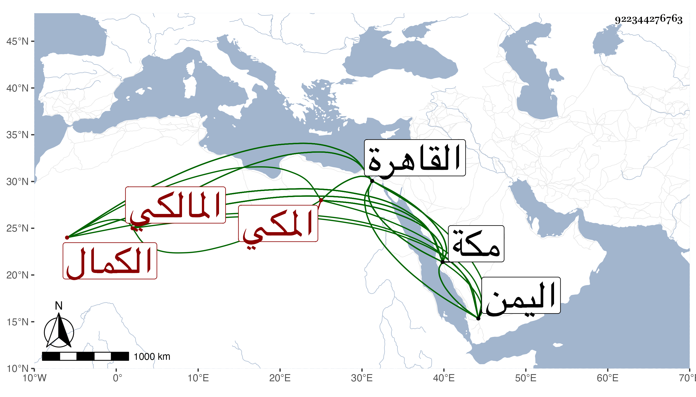

0902Sakhawi.DawLamic.ITO20230111-ara1.EIS1600.922344276763
Biography ID: 922344276763
588
فضل بن يحيى بن محمد بن عبد القوي الكمال المكي المالكي شقيق معمر وجعفر وإدريس . ولد في شوال سنة ثلاث وخمسين بمكة ونشأ بها فحفظ القرآن وأربعي النووي ونور العيون والرسالة وألفية النحو وبعض مختصرهم وعرض على ابن عبيد الله وابن إمام الكاملية وقضاة مكة والتقي بن فهد وسمع عليه وعلى الزين الأميوطي وغيرهما ، واشتغل ببلده والقاهرة في الفقه والنحو وغيرهما فكان ممن أخذ عنه الفقه العلمي وابن يونس ومحمد بن سعيد المغربي الفاروسني وأخذ عنه شرح الحكم لابن عطاء الله وقرأ على المحيوي عبد القادر الحنبلي الألفية والكثير من توضيح ابن هشام على الجوجري وأخذ عن أخيه والنور الفاكهي وحضر دروس النجم قاضي المالكية بمكة وآخرين ، ودخل القاهرة غير مرة وسمع مني بها وبمكة وكذا دخل اليمن وجال فيها ، والغالب عليه الراحة ولذا كان كل من أخويه أميز منه واشتغل قليلا ودخل القاهرة وغيرها وسمع مني بها وبمكة وهو متأخر عن أخويه مع .
